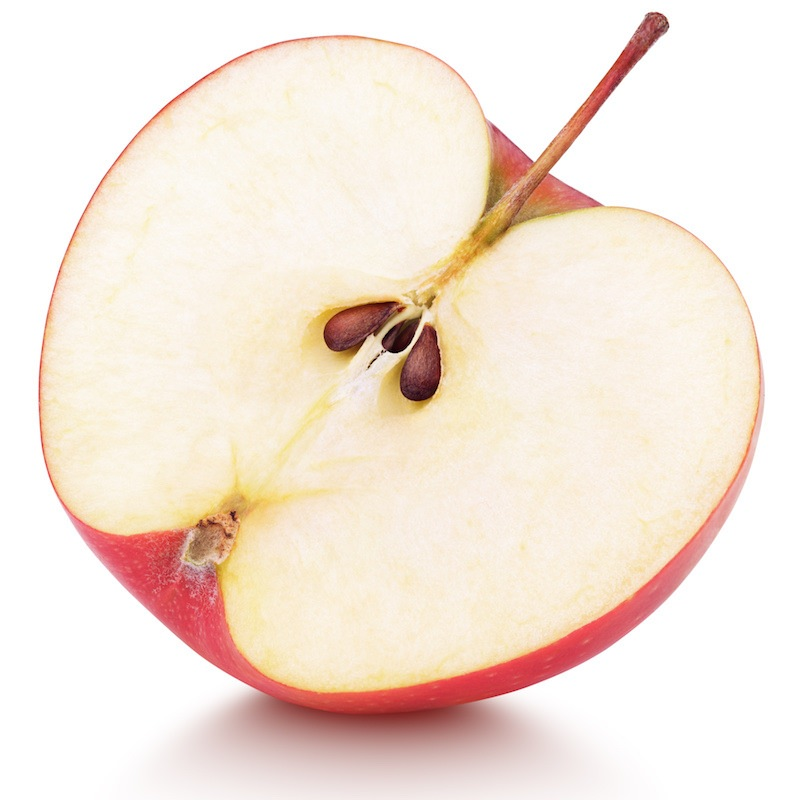

Как вырастить яблоню из семечка или ветки
Чтобы вырастить новые побеги, нужно приложить много усилий. Это связано с тем, что не все сорта обладают одинаковой способностью к укоренению.
Яблони, которые были получены таким путем, сохраняют в себе все лучшие свойства.
Нужно ли выращивать яблоню из семечка
Специалисты утверждают, что эта технология выращивания используется достаточно редко. Деревья не всегда наследуют признаки сортового яблока.
Яблони из семечка могут превратиться в:
- полноценное дерево с вкусными плодами;
- декоративное растение с невкусными яблоками;
- дичку, которая приносит мелкие яблоки.
Чтобы вырастить хорошую яблоню, нужно прислушиваться к советам опытных садоводов. Сначала нужно получить росток из семени, а затем попробовать привить саженцы к взрослому дереву. Вероятность получения полноценного дерева из семени слишком мала. Прививание ростка дает положительный результат в большинстве случаев.
Прививка позволяет вырастить дерево, которое будет устойчиво к морозам. В целом такие деревья окажутся намного крепче своих сородичей. Чтобы легко ухаживать за растением, лучше использовать низкорослые сорта. Перед тем как вырастить яблоню из семечки, нужно определиться с лучшим вариантом.
Процесс выращивания яблони из ветки
Получить сортовые яблони также можно из ветки. Чтобы побеги дали корни, необходимо правильно прикопать ветку. Эту процедуру лучше всего осуществлять весной, когда в грунте много влаги. Ветки обычно прикапывают на глубину около 10 сантиметров.
Высота побега над поверхностью грунта должна составлять не менее 30 сантиметров. Уход является простым и не вызывает сложностей. Достаточно своевременно поливать побег и очищать почву от сорняков. Через год саженцы отделяют и высаживают на новое место. Когда побеги подрастут, также желательно удалить все листья.
Рекомендации по выращиванию яблони из семечек
Получить хорошие всходы семян без специальной подготовки проблематично. Когда появятся первые ростки, нужно проверить посадки и отбраковать слабые растения. Для посадки лучше всего выбирать только здоровые растения, которые в дальнейшем станут долговечными деревьями.
На начальном этапе выращивания необходимо подобрать качественные семечки. Хорошей всхожести можно добиться от семян, которые были собраны в конце лета. Садоводы рекомендуют использовать плоды, которые были выращены на крайних ветках кроны. Эти плоды лучше освещались и получили все необходимые питательные компоненты.
Чтобы получить всходы весной, нужно поместить косточки в условия, которые близки к реальным. Предварительно также потребуется выполнить следующие процедуры:
- промойте косточки в воде;
- высушите материал;
- замочите косточки в теплой воде.
Когда семена набухнут, их помещают в смесь из опилок. Затем их переносят в погреб на 2-3 месяца. Для профилактики от плесени можно воспользоваться активированным углем.
После появления первых ростков их пересаживают в горшки с питательной почвой. Если саженцы находятся в одной емкости, то расстояние между ними должно составлять не менее 20 сантиметров.